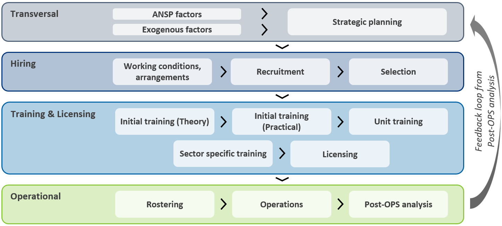

The system and its context
The ATCO management cycle
This section presents the logical model that captures the high-level process for managing air traffic controller resources. The central idea is to outline the major steps and decision points, and to explore the input parameters and considerations. The following subsections describe each logical step.
Before diving into the model's steps, it is important to understand its context, objective, and intended use throughout the study. In the earlier sections, we explored the various aspects of capacity performance and provided a comprehensive inventory. In contrast, this logical model focuses on processes, providing a detailed view of how ATCO resources are planned, developed, and managed by ANSPs.
This model serves as the overall framework for comparing ANSP practices and captures the key points of the process. It also serves as the basis of the three-pillar approach used for the regulatory analysis, which will identify which aspects are explicitly regulated, where ANSPs have greater scope for manoeuvre, and which steps of the process fall outside the regulatory scope. The model will also help us explore and understand how decisions made throughout the process can influence subsequent factors and identify any potential trade-offs.
Pillars and key areas
The analytical framework applied throughout this study is based on the ATCO management cycle developed during previous phases of the project. The lifecycle provides a structured representation of the main stages, activities and influencing factors affecting the availability of ATCOs across the European ATM system, from workforce planning and recruitment through training, licensing and operational deployment.
To support a systematic assessment of the evidence collected during the study, the elements of the lifecycle have been defined as the key areas of the analysis. These constitute the basic unit of analysis used throughout the modelling and provide a common structure for classifying the challenges, solutions and practices identified through the survey, interviews and literature review.
For analytical purposes, the key areas have been grouped into four high-level pillars, representing the main dimensions through which ATCO availability is influenced:
- Transversal, covering the strategic, institutional and external factors affecting the ATCO management cycle as a whole;
- Hiring, covering the attraction, recruitment and selection of future controllers;
- Training & Licensing, covering the activities required to qualify and endorse controllers for operational duties; and
- Operational, covering the deployment, utilisation and continuous development of ATCOs.
